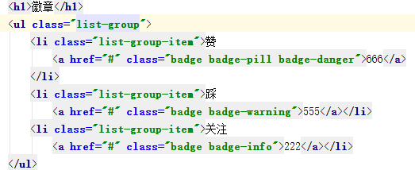
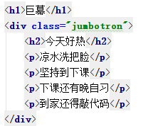
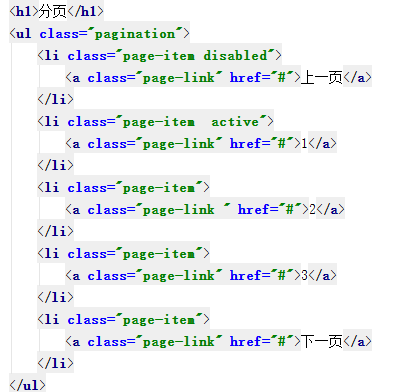
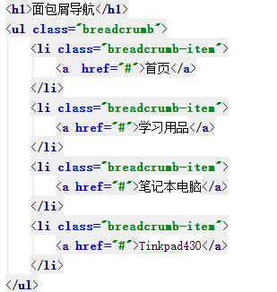
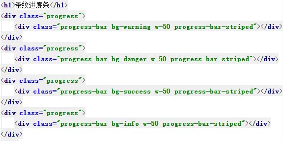

其他组件
1.徽章
基本类 badge
颜色 badge-danger/warning/success...
徽章的样式 badge-pill 胶囊

2.巨幕
巨大的内边距，有背景颜色，和圆角
class="jumbotron"

凉水洗把脸
坚持到下课
下课还有晚自习
到家还得敲代码
3.分页
ul.pagination>li.page-item>a.page-link
li的修饰类 .active 激活
.disabled 禁用

4.面包屑导航
ul.breadcrumb>li.breadcrumb-item
中间的连接符号需要自己重写样式
.breadcrumb-item + .breadcrumb-item::before{
content:">";
}

5.进度条
div.progress>div.progress-bar+w-50+bg-danger
子div设置w宽度，就是进度条进度
子div设置背景，就是进度的颜色
子div设置条纹 progress-bar-striped
子div设置动画 progress-bar-animated
可以在同一个div.progress中写多个div.progress-bar
